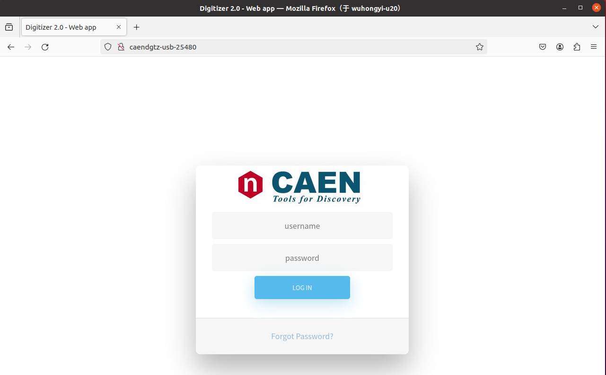
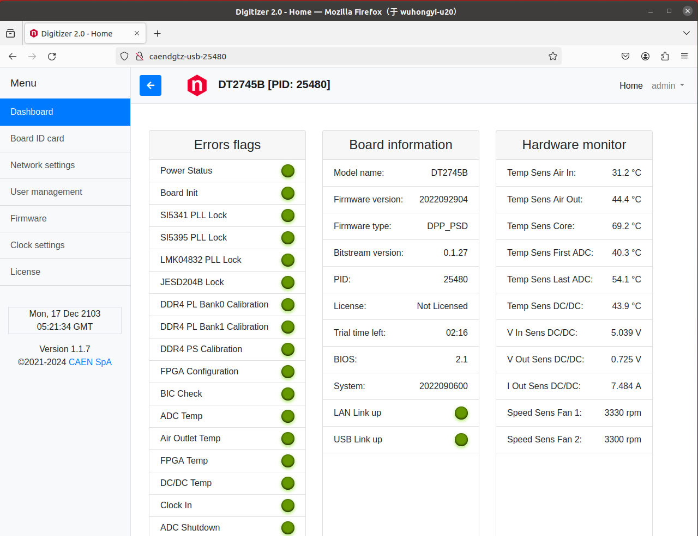

Program installation
This program installation requires reliance on third-party libraries such as Boost, OpenSSL, Qt5, ROOT 6, etc. The following versions have been tested.
- OS
Ubuntu 20.04/22.04/24.04
Fedora 40
Rocky 9
- boost >= 1.67
1.71.0
1.74.0
1.75.0
1.83.0
- OpenSSL
1.1.1
3.0.2
3.0.7
3.0.13
3.2.2
- Qt 5
5.12.8
5.15.3
5.15.9
5.15.13
5.15.17
- ROOT 6
6.24.08 some bug
6.26.16
6.30.06 some bug
6.32.04 some bug
The systems tested by this program include Ubuntu20.04/22.04/24.04 Fedora40 Rocky9. Supports compilation of various LINUX operating systems. If your operating system compilation does not pass, please contact Hongyi Wu
# Ubuntu20.04 Dependency installation
sudo apt -y install libboost-dev libboost-all-dev libssl-dev openssl qt5-default qtcreator libqt5charts5-dev
# Ubuntu22.04 Dependency installation
sudo apt -y install libboost-dev libboost-all-dev libssl-dev openssl libqt5charts5-dev
# Ubuntu24.04 Dependency installation
sudo apt -y install libboost-dev libboost-all-dev libssl-dev openssl libqt5charts5-dev
# Fedora 40 Dependency installation
sudo dnf -y install redhat-lsb-core boost boost-devel openssl openssl-devel qt5-qtcharts qt5-qtcharts-devel qt5-qtbase qt5-qtbase-devel
# Rocky 9 Dependency installation
sudo dnf -y install boost boost-devel openssl openssl-devel qt5-qtcharts qt5-qtcharts-devel qt5-qtbase qt5-qtbase-devel
# ROOT 6 recommend 6.26.16
Software installation steps
Delete the old version PKUCAENDAQ folder from the personal directory
Extract this package to your personal directory ($HOME)
Compile and install drivers in the driver folder
cd driver
tar -zxvf CAENDGTZ-USB-Drv-1.2.tgz
cd CAENDGTZ-USB-Drv-1.2/
sudo ./install.sh
cd ..
tar -zxvf caen_felib-v1.3.1.tar.gz
cd caen_felib-v1.3.1/
./configure --disable-assert
make
sudo make install
sudo ldconfig
cd ..
tar -zxvf caen_dig2-v1.6.1.tar.gz
cd caen_dig2-v1.6.1/
./configure --disable-assert
make
sudo make install
sudo ldconfig
Compile GUI software
cd GUI
chmod +x makefile.sh.x
./makefile.sh.x
# Waitting for the compilation to complete. After the compilation is passed, the executable file gddaq will be generated in the folder
# Check if the executable file gddaq has been generated, and if so, compile successfully. If not, please contact Hongyi Wu.
Registration of each module in LINUX OS
Due to the inability of some Linux distributions to automatically retrieve the USB name of the digitizer, registration is required when using this module for the first time. Module registration needs to be done module by module. During the registration process, only one module can be connected to the LINUX OS via USB.
Connect the Type-C end of the USB3.0 cable to the module and the other end to the computer. Then enter CAENDGTZ-USB-{PIDNUMBER} in the browser, where {PIDNUMBER} is replaced with the PID code of the module being used, for example: CAENDGTZ-USB-25480. Check if it can be accessed. If it cannot be accessed, it means that the module has not been registered as a driver yet.
In the USB driver installation package, such as CAENDGTZ-USB-Drv-1.2, there is a driver registration script file regPID.sh, which can be run using the following command. After execution, you will see a prompt indicating successful registration.
sudo ./regPID.sh
Afterwards, by accessing CAENDGTZ-USB-{PIDNUMBER} through the webpage, you can see the following login page, with the default username and password being admin.
After logging in, the interface is shown below. In the left menu bar, network settings can be made. If you want to obtain data through Ethernet cable, you can set the IP through this page. According to the laboratory network situation, choose DHCP to automatically allocate IP or manually configure IP. After setting the IP, entering the module’s IP in the browser can also access the settings page.
